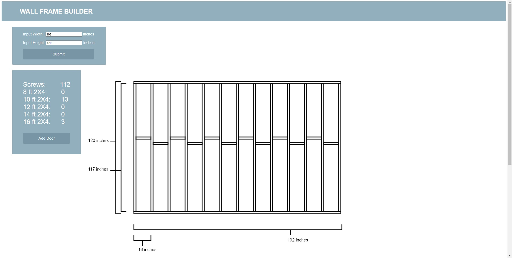

Andrew Narlock Design
The goal of this small project was to build an app that creates blueprints for a standard wall frame given measurements provided by a user. I started this project when I was first introduced to HTML, CSS and JavaScript and it provided me with a great opportunity to practice some basic website building tools.
This project was my first experience working with user inputs and event listeners in JavaScript. It was also my first time working with the Canvas API. The app allows for users to add a movable door frame and provides an estimate for the amount of materials needed for a given frame. The app can be found here!